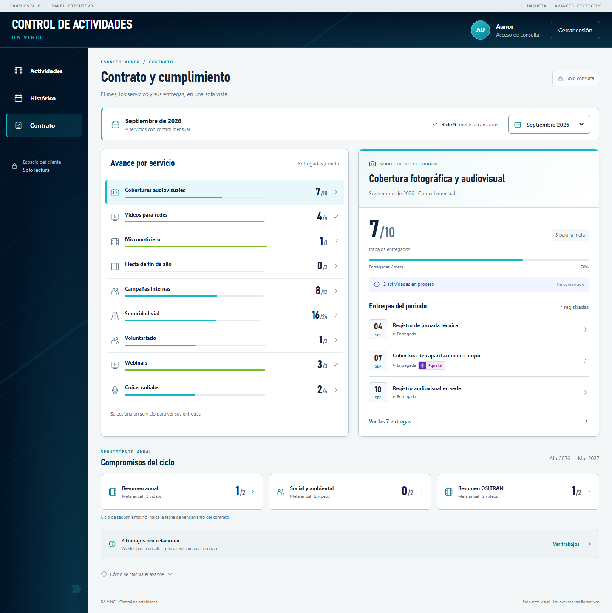
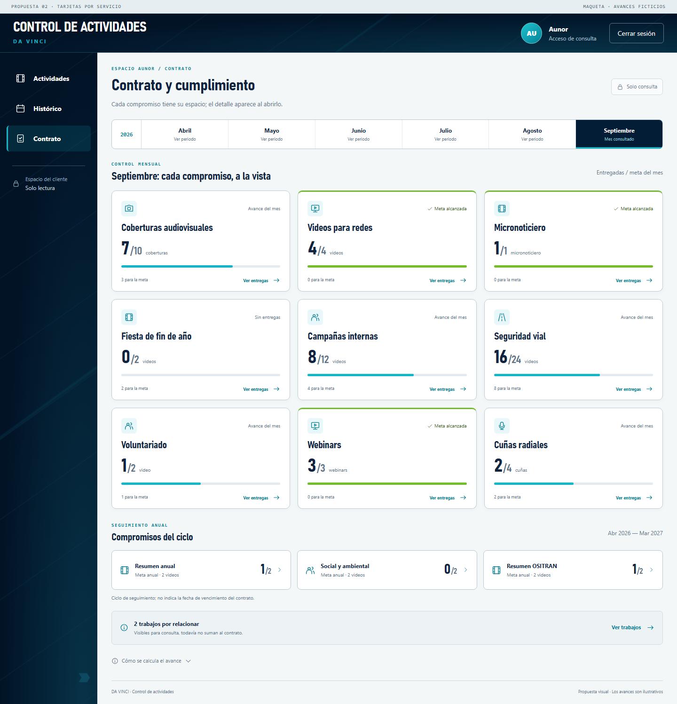
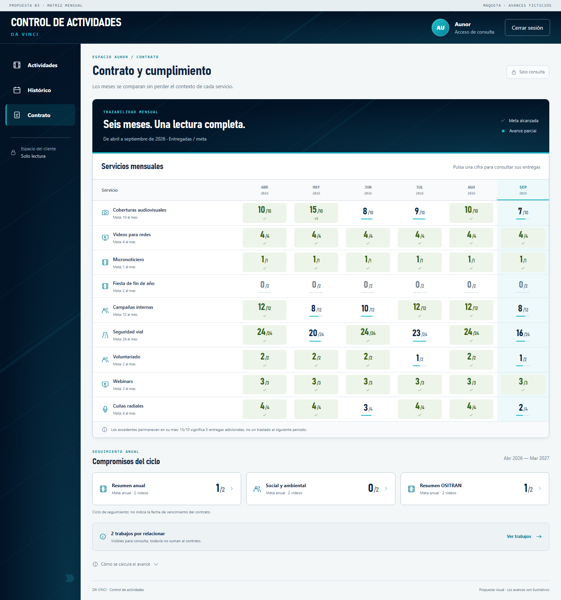
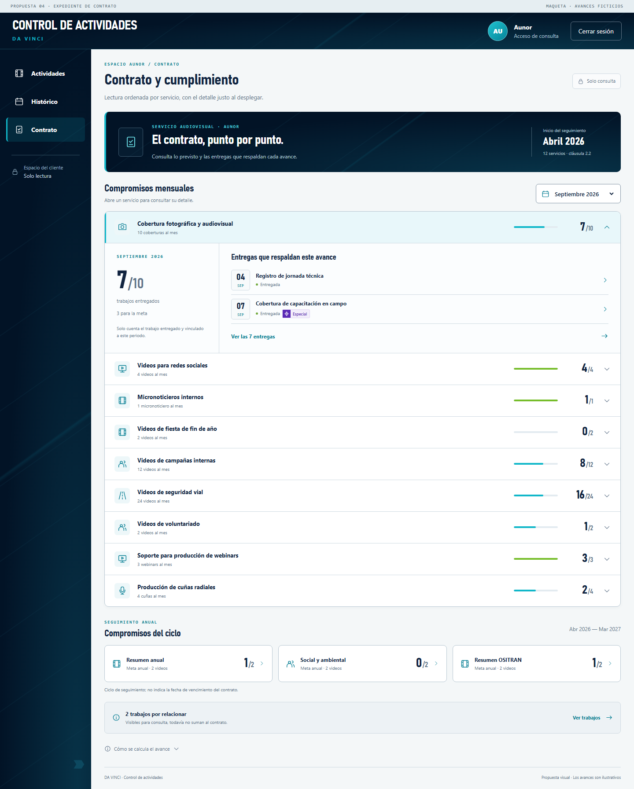
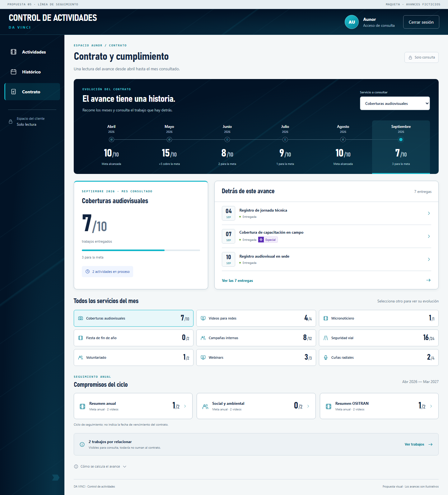

01
Panel ejecutivo
Vista general + detalle persistente · Recomendada
La opción más equilibrada: compara servicios y revisa las entregas sin cambiar de pantalla.
02
Tarjetas por servicio
Exploración visual · Una tarjeta por compromiso
Lectura rápida, números protagonistas y detalle bajo demanda. La más visual para consultas puntuales.
03
Matriz mensual
Comparación entre meses · Precisión de seguimiento
Permite detectar avances y excedentes desde abril. En móvil, la tabla se desplaza horizontalmente.
04
Expediente de contrato
Orden documental · Detalle desplegable
Un recorrido ordenado punto por punto, sin mostrar todos los detalles al mismo tiempo.
05
Línea de seguimiento
Evolución del servicio · Recorrido desde abril
Pone el tiempo en primer plano: cómo progresa cada servicio y qué se entregó en cada mes.
MI RECOMENDACIÓN01 para el uso diario.
01 para el uso diario.
03 si priorizas comparar meses.
La primera conserva la familiaridad de DA VINCI y resuelve la lista extensa, el texto repetido y el espacio desaprovechado.
- Avance mensual separado del anual.
- Entregas y excedentes identificables.
- Sin nombres de operarios.
- Aunor solo consulta.
Abrir el prototipo 01 →Ver su versión móvil →

Todos los prototipos funcionan localmente con ejemplos. No se han modificado la plataforma ni sus datos.